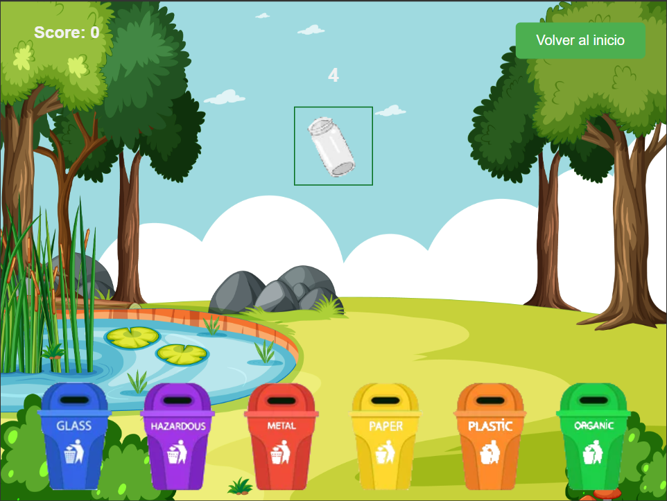

Como jugar
En Organiza los Residuos, tu objetivo es clasificar los residuos en los basureros adecuados para cada tipo de alimento:
- Arrastra los residuos a su basurero correspondiente.
- Selecciona el basurero correcto para cada tipo de alimento.
- Gana puntos por clasificar correctamente los residuos.
- Completa la tarea antes de que se acabe el tiempo.
